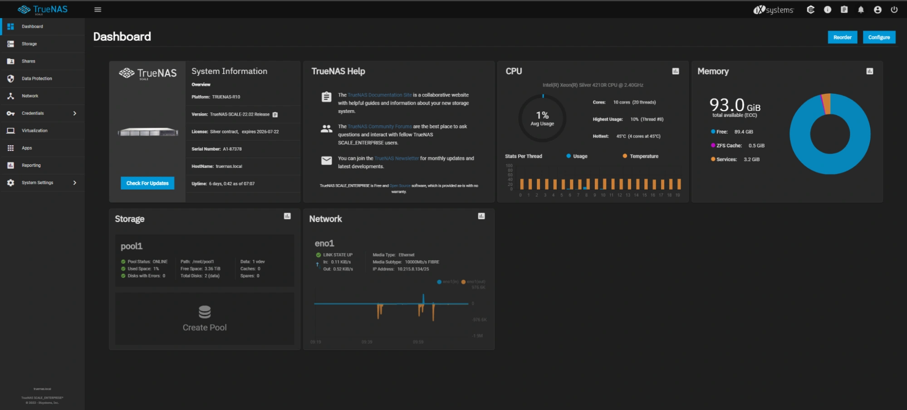

The Problem - Storage
The sizes of files (especially multimedia) are becoming larger, and similarly out multimedia memories and documents are forever growing, however reliable, accessible storage space are not getting cheaper in today's economy, if not it is getting more expensive and options for unlimited cloud storage are trending to become less popular as organization leverage consumers dependancies on storage.
The scope of this project will be to build an open source Network Attach Storage (NAS). This NAS will provide self hosted storage services locally with the option to expand into a self hosted cloud. This project will demonstrate the ability to use older computer hardware and put them to use to add free storage space for a home user.
The hardware: Dell Optiplex 7060
- Intel Core i5-8500
- 16GB DDR4 RAM
- 256 NVMe SSD
- 500GB SSD
- 6 USB Port (4 USB 3.1)
The Virtual Environment: Proxmox OS
Proxmox is an open source virtual environment very popular in the open source community and will be used to virtualize TrueNas OS (More on this later) which will provide us the file serving features.
For the scope of this project, virtulizing truenas helps with expandability and flexibility. 1 such example is intial deployment of a Truenas instance (VM) does not require a hard restart, this restart is virtualized in proxmox. The same can be said for any hardware devices Truenas sees, it is all virtualized and for the most part can be hot swapped.

Truenas - the Virtual Machine
Truenas scale is an open source operating system based on Debian Linux. It utilizes ZFS storage protocol which in production environments have proven to be effective at being reliable, accessible and safe data storage system.
Truenas provides all the basic features a home user will need for a local network attached storage with additional options to have containerized applications. With a fully functioning Truenas, all devices on a home LAN can connect and share files. Truenas has a host of features that can then run periodic backups of the files that are in its storage. It also has version control built in, great for collaboration!